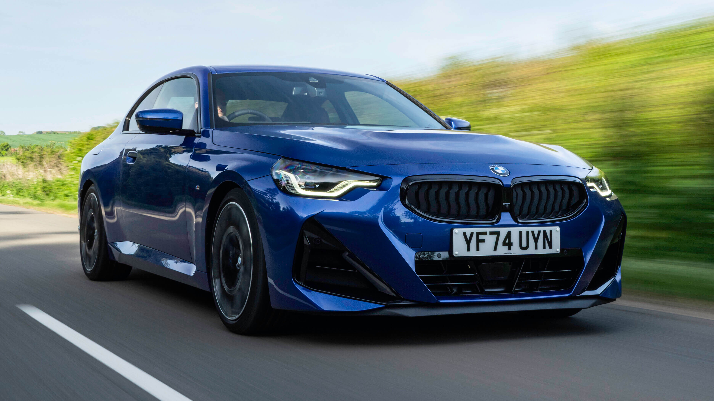

On display

The BMW 2 Series Coupe is a compact, driver-focused luxury sports car celebrated for its classic rear-wheel-drive dynamics, athletic handling, and aggressive styling. It bridges the gap between everyday usability and pure track-ready performance, competing directly with vehicles like the Porsche Cayman and Audi TT.